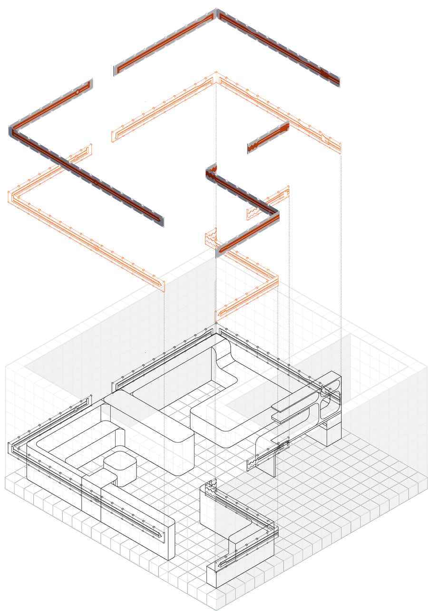
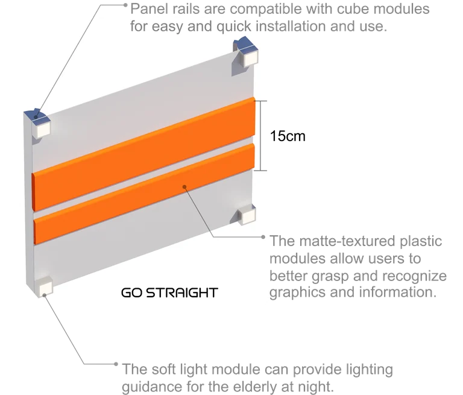
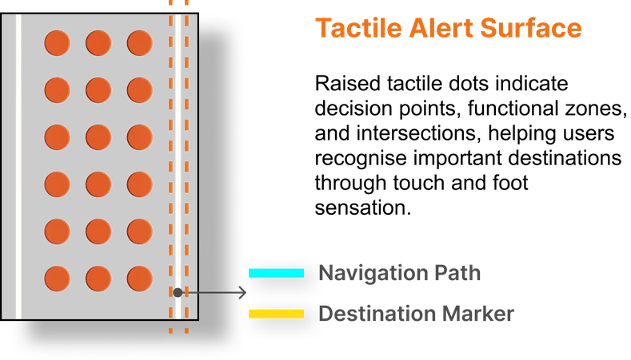
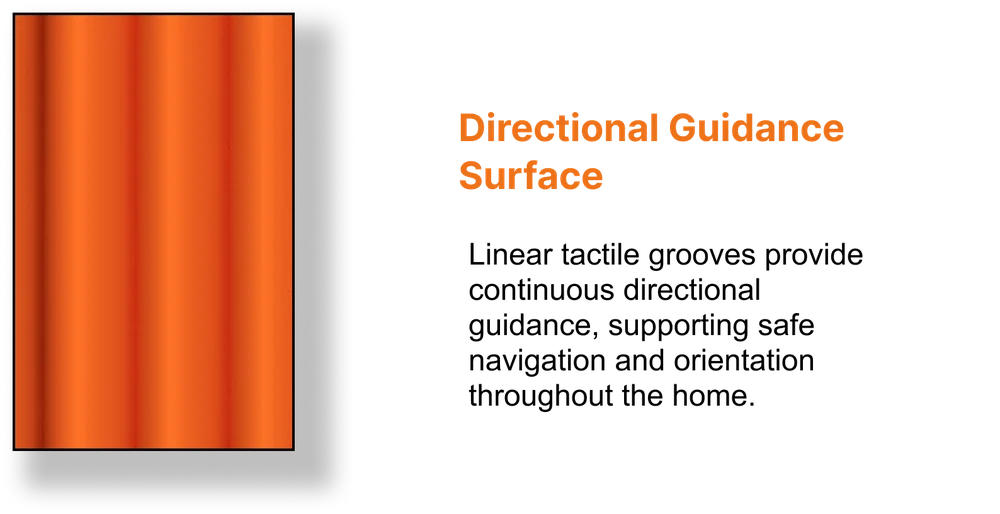

RESEARCH
From Ageing Crisis
to Design Rules.
Mnemosyne starts from a global ageing crisis, looks at how China’s seniors actually live, and turns what it finds into three sets of design rules for mobility, vision and memory decline.
The Global Aging Crisis
Europe, North America and East Asia have already crossed into deep ageing, with more than 19% of people over 65. China is not there yet, but it is climbing fast, and will soon carry the largest and fastest-growing older population in the world.
Super-Aged Society
(21+% Seniors)

The numbers hide the daily reality: weaker legs, dimmer eyesight, harder hearing, slipping memory, fewer people to talk to. Most seniors simply live with these at home.
Where Ageing Shows Up at Home
Ageing looks different for everyone. Some lose their sense of direction, some cannot see or hear as well, others move slowly or find it harder to remember.


A - Navigation Difficulty
C - Physical Assistance Needs
E - Risk Level/ Fall Risk
B - Sensory Support Needs
D - Cognitive Load
We narrowed our focus to the three declines that most affect whether a person can still manage their own home: mobility, vision and memory. Each one becomes a person the design has to answer for.
Three Key Aging Types
MOBILITY DECLINE
Knee arthritis + balance loss
Difficulty standing, sitting and
moving independently
VISION DECLINE
Reduced contrast + poor night vision
Difficulty recognising boundaries
and destinations
MEMORY DECLINE
Short-term memory loss + disorientation
Difficulty remembering tasks,
objects and routes
→ The three people behind these types, and how we rebuilt their rooms, are shown in WORKS.
Problem Statement
Aging does not arrive as a single condition—it unfolds differently for every person. Some lose balance, some lose clarity of vision, some lose memory or social connection. Our research shows that these layered difficulties are widespread, yet the spaces seniors live in rarely change with them.

The real problem is not aging itself, but the mismatch between the changing body and the unchanging home. We need a design system that adapts to people, instead of forcing people to adapt to space.
Limitations Of Existing Assistive Products
Across the case studies, eight recurring limitations reveal a common gap: existing solutions respond to isolated needs, but rarely adapt as an integrated living environment.

Design Statement
We propose an adaptive modular living system for older adults that translates diverse patterns of physical, sensory, and cognitive decline into customizable furniture, spatial configurations, and supportive domestic environments.
Rather than treating ageing as a fixed condition, the system recognizes that individual abilities and everyday needs continuously change over time. Through a flexible modular framework, spatial components can be reconfigured, replaced, or adapted in response to different levels of mobility, perception, and cognition, allowing the home to evolve alongside the changing body.

By integrating accessibility, spatial guidance, continuous physical support, and personalized furniture into one coherent system, the design aims to reduce the mismatch between residents and their existing domestic environments. Instead of requiring older adults to constantly adapt themselves to rigid spaces, the environment becomes capable of adapting to them.
Through this personalized and evolving approach, the project seeks to support independent living, everyday autonomy, dignity, and a greater sense of control, transforming the home from a static backdrop into an active framework of care that responds to age-related changes in everyday life.
Mnemosyne Design Workflow

DESIGN RULES
Every spatial decision follows three sets of adaptive rules, one each for mobility, vision and memory decline.
RULE 1 — FURNITURE & RESTRICTION
Sized to the Body
≤1220 mm reach
430-480 mm seat
bed h 450 mm

Reach, seating and bed heights follow ADA and China’s GB/T 46015-2025. Nothing she needs sits higher than 1220 mm, seats hold 430-480 mm, and the bed edge supports a lateral transfer from a wheelchair.

RULE 2 — CLEAR CIRCULATION ZONE
One Route, No Obstacles
≥1200 mm width
Ø1500 turn
A continuous route links entrance, bed, bathroom, kitchen and living area. The path stays at least 1200 mm wide (1500 preferred), with Ø1500 mm turning pockets at every decision point.


RULE 3 — HANDRAIL GENERATION
Support, Grown from Furniture
5-step generation
Furniture modules are decomposed, arranged along circulation, and joined by continuous handrail paths, producing a room where support is built in, not added on.

1
Component Extraction
Furniture elements are decomposed into modular units, forming the base spatial components.

2
Spatial Configuration
Modules are arranged according to spatial layout, circulation paths, and user movement patterns.

3
Handrail Path Generation
Continuous support paths are generated along key movement routes, linking furniture and spatial edges.

4
Integrated Support System
Handrails are embedded into the furniture system, forming a continuous and accessible spatial interface.

5
Generated Room Prototype
From handrail generation rules to a complete domestic spatial prototype.
ADAPTIVE NAVIGATION FRAMEWORK
Guidance that Matches Sight
4 guidance levels
Four escalating levels of guidance meet the resident wherever her eyesight is: colour first, then touch, then light, then the robot. The home never asks for more vision than she has.


RULE 1 — CONTRAST SURFACE
Boundaries You Can See
dH >= 90 deg
CR >= 3.0
Without brightness or hue difference, rooms blur into one surface. Pairing tones with a hue gap of at least 90 degrees and holding contrast above 3.0 keeps every boundary readable, even with similar lightness.


RULE 2 — TACTILE WALL PANEL
Routes Read by Hand
15 cm grip
cube-mounted
A continuous tactile language runs along the walls: raised symbols name each destination, 15 cm grip rails hold her steady, and the soft-light modules glow at night. Panels click straight onto the cube grid.

Panel rails are compatible with cube modules for easy and quick installation and use.

The soft light module can provide lighting guidance for the elderly at night.
Tactile Wall Panel is a tactile wall-guidance system for elderly people with declining vision. Raised patterns and symbols help users identify routes, directions, and destinations through touch, enabling safer, more independent navigation in age-friendly indoor environments.


RULE 3 — SMART PATH
A Floor that Points the Way
tactile dots
directional grooves
Two tactile surfaces guide her underfoot. Raised dots mark decision points and destinations; linear grooves keep her moving in the right direction between them.



RULE 4 — ADAPTIVE LIGHT SYSTEM
Four Layers of Light
1800-6500 K
4 layers
Ceiling ambient, furniture edge, touch-panel and floor path lights work as one system, tunable from 1800 K to 6500 K so brightness and warmth follow the hour and the task.


1Ceiling Ambient Light
Provides uniform ambient illumination for the entire space

2Furniture Edge Light
3Touchable Panel Light
Integrated lighting along furniture enhances visibility and support

4Navigation Path Light
Floor-integrated guidance lighting supports safe movement and orientation
RULE 1 — LOOPED CIRCULATION
One Loop, One Decision at a Time
1 loop
0 dead ends
The plan closes into a single loop. No intersections, no dead ends: functional zones line up along one continuous route, so he only ever faces one destination at a time.


RULE 2 — COLOUR AS MEMORY CUE
One Function, One Colour
Each zone keeps one fixed colour: yellow for cooking, purple for rest, blue for hygiene, green for nature, light blue for reading. The room states its purpose before he has to remember it.
1 function = 1 colour

One Function = One Colour
Yellow —
Kitchen / Cooking
Purple —
Bedroom / Rest
Blue —
Bathroom / Hygiene
Green —
Nature / Relaxation
Light Blue —
Reading / Cognitive Activity
RULE 3 — COLOUR ATLAS
The Palette that Holds the Plan
Five rooms, five fixed hues. The atlas keeps the palette stable across every rebuild, so the home may change shape but never changes its colours.
5 zone colours

BEDROOM

GREEN WALL

BATHROOM

READING

KITCHEN
Different needs call for a flexible furniture system. The Cube modules turn these rules into rooms that can be rebuilt as those needs change.